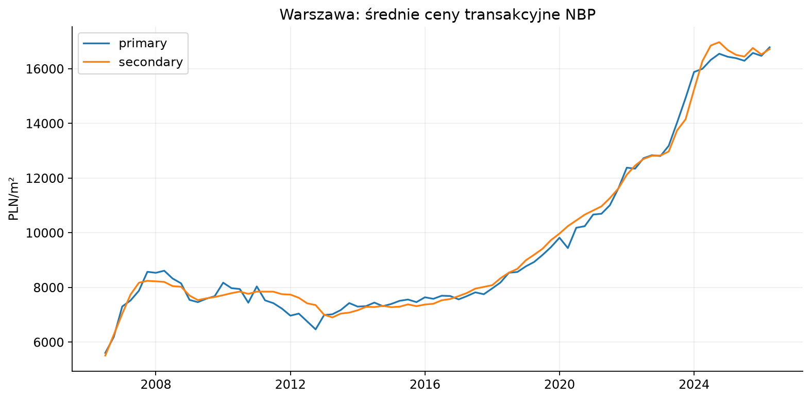
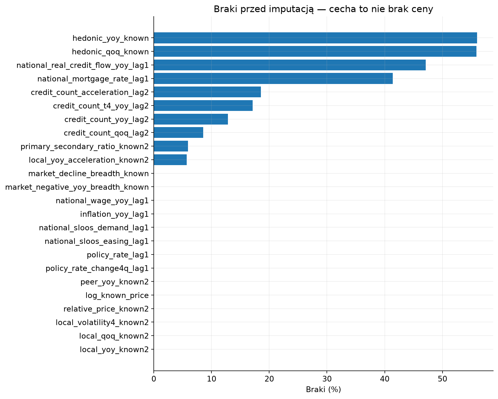
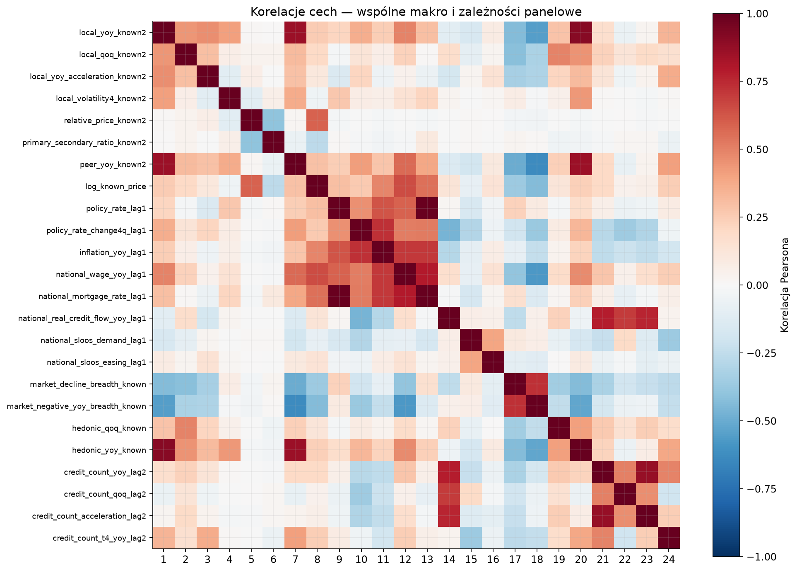
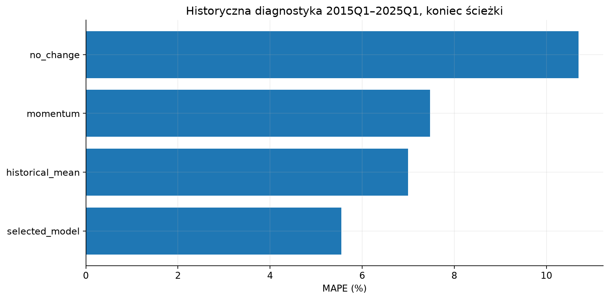
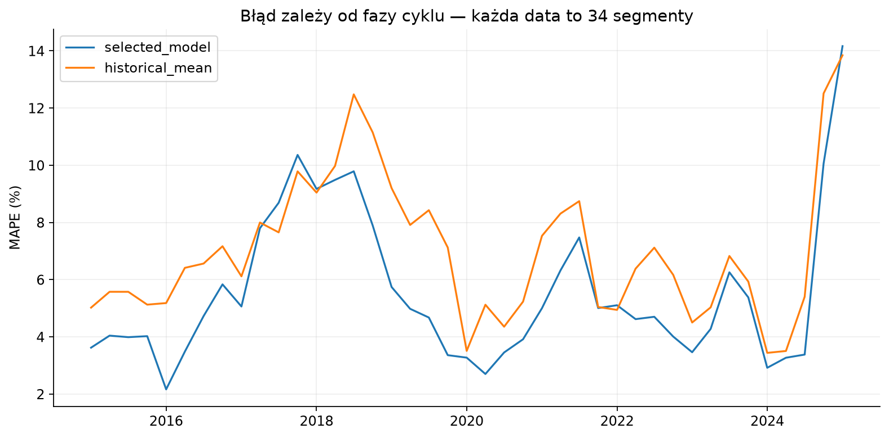
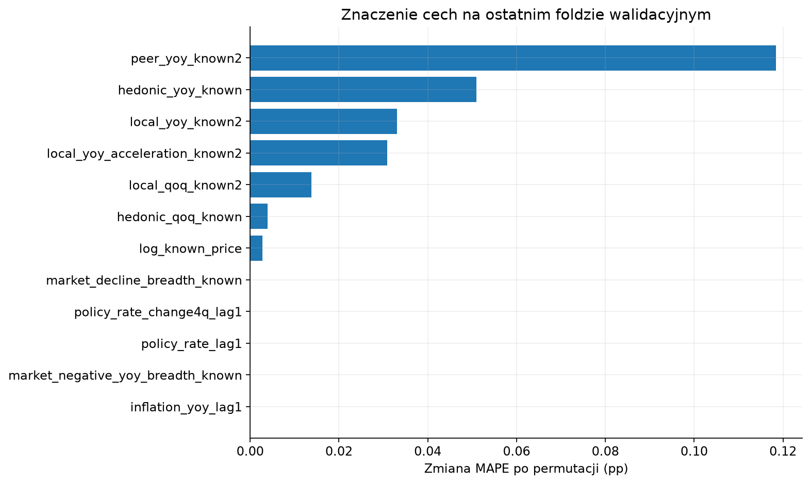
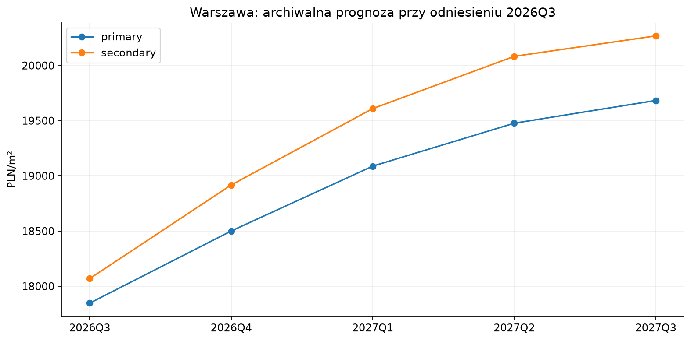

Samodzielny projekt zaliczeniowy Data Science •15.11.2026
NBP BaRN (ceny transakcyjne i indeksy hedoniczne), GUS (płace), BIS (inflacja i stopy), NBP MIR/SLOOS (koszt i popyt na kredyt), AMRON-SARFiN (liczby kredytów). Ceny obejmują2006Q3–2026Q2. Pliki źródłowe zachowano z hashami SHA256. Licencje i odnośniki: docs/SOURCES.md.
11895 rekordów zadania wielohoryzontowego odpowiada2379 grupom miasto–rynek–kwartał i70 kwartałom. Pięć horyzontów współdzieli cechy: nie są to niezależne cykle.24 cechy liczbowe i2 kategorie. Surowych odczytów cen/indeksów:9337. Nie interpolowano cen i nie dodawano danych syntetycznych.
Rozdzielono średnie ceny, oferty i indeksy. Oferty nie są etykietą. Zachowano skrajne wartości, bo mogą oznaczać zmianę cyklu lub strukturę transakcji; sprawdzono dodatniość, klucze i kompletność. Braki kredytu i indeksów są strukturalne; imputacja medianą i wskaźnik braków są dopasowane wyłącznie na treningu. GUS i BIS nie są danymi mikro o konkretnej nieruchomości.



Ceny wejściowe mają opóźnienie2 kwartałów, skracane do1 wyłącznie przy kalendarzu publikacji; makro q−1, liczby kredytów q−2. Cały komplet miasto/rynek/horyzont pozostaje w jednym foldzie. Etykiety q…q+4 uznaje się za dostępne w q+6; muszą być ściśle wcześniejsze niż chwila prognozy. Transformacje są wewnątrz Pipeline. Część założeń publikacyjnych jest przybliżona; posiadamy zrewidowane szeregi, a nie historyczne vintages.
Porównano Random Forest, Ridge i wielowyjściowy HistGradientBoosting.7 konfiguracji ×6 czasowych foldów. Selekcja: średnia MAPE h4, wyłącznie walidacja. Wybrano rf_12_d6. Wszystkie próby, parametry, czasy i błędy zapisano w tuning_all_trials.csv.
| trial | MAPE_h4 | MAPE_all | seconds |
|---|---|---|---|
| rf_12_d6 | 4.856 | 3.523 | 0.902 |
| rf_12_d4 | 4.901 | 3.577 | 0.911 |
| hgb_12_l7 | 4.914 | 3.533 | 12.559 |
| hgb_20_l7 | 5.223 | 3.979 | 16.714 |
| rf_20_d4 | 5.382 | 3.890 | 1.018 |
| ridge_20_a1000 | 5.692 | 4.018 | 0.080 |
| ridge_12_a100 | 9.479 | 7.541 | 0.076 |
Poprzednie eksperymenty już oglądały znaczną część historii. Poniższy wynik2015–2025 jest diagnostyką retrospektywną, także nakładającą się na foldy wyboru. Nie stanowi niezależnego potwierdzenia przewagi. Zablokowany dla tej paczki pojedynczy origin2025Q2 to34 grupy i170 punktów ścieżki; ceny historyczne były dostępne wcześniej, więc nie jest to dziewiczy test prospektywny. Nie zmieniano wyboru modelu po tym teście.
| phase | model | horizon | n | MAPE_pct | MAE_pln_m2 | RMSE_pln_m2 |
|---|---|---|---|---|---|---|
| historical_diagnostic | historical_mean | 4 | 1394 | 6.997 | 535.757 | 703.681 |
| historical_diagnostic | momentum | 4 | 1394 | 7.474 | 637.211 | 973.034 |
| historical_diagnostic | no_change | 4 | 1394 | 10.698 | 873.946 | 1101.517 |
| historical_diagnostic | selected_model | 4 | 1394 | 5.550 | 431.115 | 593.764 |
| locked_test | hgb_12_l7 | 4 | 34 | 12.703 | 1481.767 | 1664.414 |
| locked_test | hgb_20_l7 | 4 | 34 | 7.330 | 853.968 | 1010.462 |
| locked_test | historical_mean | 4 | 34 | 13.414 | 1556.586 | 1775.538 |
| locked_test | momentum | 4 | 34 | 17.875 | 2067.823 | 2433.088 |
| locked_test | no_change | 4 | 34 | 3.876 | 434.572 | 564.389 |
| locked_test | rf_12_d4 | 4 | 34 | 13.571 | 1561.782 | 1701.964 |
| locked_test | rf_12_d6 | 4 | 34 | 13.758 | 1582.240 | 1722.224 |
| locked_test | rf_20_d4 | 4 | 34 | 10.065 | 1155.579 | 1304.085 |
| locked_test | ridge_12_a100 | 4 | 34 | 13.423 | 1548.203 | 1685.226 |
| locked_test | ridge_20_a1000 | 4 | 34 | 11.611 | 1333.187 | 1469.541 |
Różnica historycznej MAPE model−średnia:-1.446 pp; przedział z bootstrapu bloków6kwartałów:[-2.015;-0.960] pp. Ujemna różnica oznacza mniejszy błąd modelu. Nie jest to przedział przyszłej ceny ani potwierdzenie przyczynowości. Wspólne makro,17 miast i zachodzące na siebie ścieżki ograniczają niezależność.


Permutacja pojedynczych cech na ostatnim foldzie walidacyjnym mierzy zmianę MAPE. Współzależne cechy mogą dzielić znaczenie, a ujemne znaczenie jest możliwe. local_sensitivity.csv pokazuje zmianę prognozy Warszawy po zastąpieniu każdej cechy medianą treningową. To lokalna analiza wrażliwości, nie addytywne SHAP i nie efekt przyczynowy stóp lub dopłat.

models/model.pkl to wybrany model przetrenowany dla odniesienia2026Q3. Paczka powstała w listopadzie2026, więc nie udajemy, że została wystawiona w2026Q3. Ścieżka obejmuje2026Q3–2027Q3, wejściowa cena pochodzi z2026Q1. Można porównywać miasta/rynki i budować scenariusz budżetu. Brak skalibrowanych przedziałów; nie należy traktować punktów jako gwarancji. Oryginalny RF zachowano oddzielnie jako isolated_original_rf.joblib.

FastAPI/Pydantic /predict, Streamlit, testy pytest, schemat wejścia i workflow CI. make all oraz Windows run.ps1 odtwarzają tabele, model i wykresy z lokalnych niezmiennych źródeł. Wyniki czasu i rozmiaru: green_it.json. Bez GPU; dwa wątki. Nie mierzyliśmy energii ani CO₂. Obraz Docker przygotowano, ale lokalnie brak silnika Docker; workflow CI wymaga uruchomienia po publikacji repozytorium.
Średnia cena zmienia się wraz z miksem transakcji; brak indywidualnych cech lokali, długiej historii niezależnych załamań i pewnych vintages. Rzadkie spadki oraz interwencje polityczne mogą być trudne do uchwycenia. Kolejny rzetelny krok: zamrożony protokół i prospektywna ocena nowych kwartałów. Nie dodawano modułu płynności, alarmów sprzedaży ani sztucznych kryzysów.